My latest project
This is my latest project as it looked on completion. My son found a deal on a nice mount bracket that takes little table room. we ran into a problem as you can see
dual mount monitures
from the following pictures. the new brackets are made to hold a monitor from the center of the back and these monitors had a mount point on the lower edge with very different mounting holes. I would have needed longer screws if I had modified the new mount bracket. Also the mount seemed a bit unstable that way. (I did try). Rather than drive the 10 miles into town and search for Chinese metric screws I decided go the rout shown below. I knew that would be sturdy plus I could use what I had on hand.
- 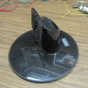This is the original mount that took up much desk space and was a bit unstable
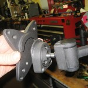 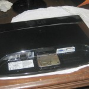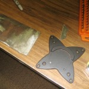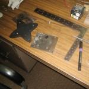
Above is the new mount as you can see, it is very different where it attaches to the monitor. Next shows the 3/16 sheet iron plate I made to attach to the monitor, next is the new mount bracket and the 3/16 thick sheet iron I used, The iron I used is all salvage, cut from junk or left over from projects. The last picture in the row is finished plate with the holes drilled to match the new mount bracket, note the marker and the up arrow on the iron plate. Nothing worse than to spend the time to cut and drill a piece and then to turn it wrong on the welding table and screw it up permanently. Easy to do with grey pencil marks on grey iron or trusting your eyes.
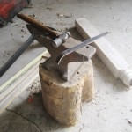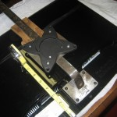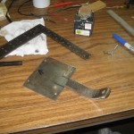
On the left above is the one inch by 1/4 iron bar on the anvil with the hammer that shaped it. The bar is also from my junk pile, much stronger than needed, but it is what I found quickly on a cold winter day. The anvil was my fathers and I think my Grandfathers, which makes it over a 100 years old. Even though its shows its age it’s perfect for shaping iron with a hammer. I wonder if my Grandfather, when he hammered out plow shares or shaped horse shoes on it, could ever have imagined what I used it for today.
The next picture shows laying out the irons to determine the size. On this type of project I find it best to constantly check for size and fit. The third picture shows the iron cut to size and marks for fit up. Next we are back to the welding table, because I was concerned about alignment I clamped the pieces down. My weld isn’t the most beautiful work that I have done but my welding shop is unheated. The lens in my helmet would fog up even if I held my breath. You need to see the puddle of molten metal to make a good weld and so I erred on the safe side by letting the puddle get a bit high.
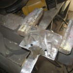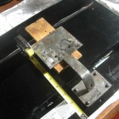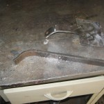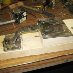
No problem with some extra weld metal, the big hand grinder takes it down fast. You can barley see my nine inch yellow grinder in back of the vice. The second picture shows us back inside checking alignment again. Than back to the welding shop and forming a matching bracket for the second monitor. They must be the same to look right. the last picture in the above line shows the jig I made to hold parts in line for welding and to assure that the brackets match.
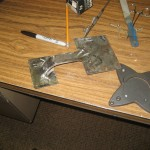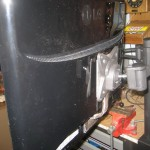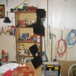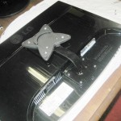
Above you can see all the metal work is done. In the next picture we try it and it looks ” good enough for a town this size”. It is now safe to finish the second bracket. Next we take things apart and hang the brackets up and paint them as you can see in the third photo. Because it is cold outside, I paint in the wash room in the lab which get pretty strong smelling . I did have an exhaust fan set up but that blows too much heat out. The solution I have found best is to paint it than go for coffee.
The forth shows the finished brackets final attachment to the monitor, almost factory looking.
Below is the finale test mount. Next to it is the finished product, very stable as it is clamped to the table.
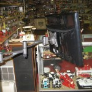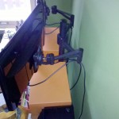
Below is my Son and Grandson enjoying the finished setup.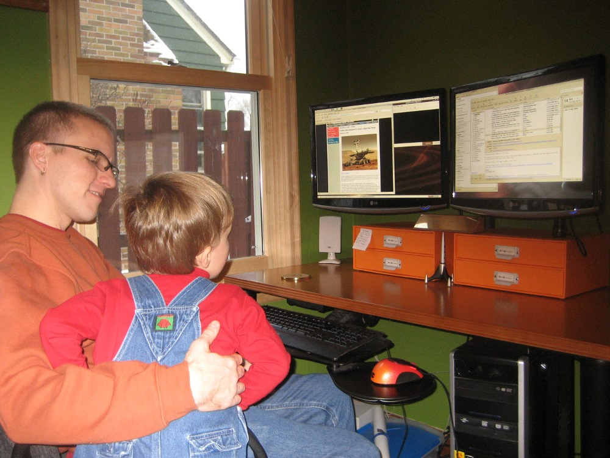
The cost of the project? Two 6013 welding rods, A couple pounds of scrap iron, some spray paint and bolts from my junk drawer. Less than the cost of a good cup of java, plus a bit of time.